2 Properti gambar
Setelah Anda memasang gambar yang diinginkan, lalu apa yang perlu dilakukan?
Anda dapat mengatur properti-nya agar lebih optimal, yaitu mengurangi beban
halaman.
Properti yang bisa Anda atur antara lain:
• Format file yang akan digunakan gambar tersebut.
• Teks alternatif, yaitu teks keterangan apabila gambar gagal tampil.
• Hyperlink pada gambar tersebut.
• Ukuran gambar.
• Pelipatan gambar dengan teks sekelilingnya.
• Border atau garis batas di sekeliling gambar.
Sarana pengaturan yang diperlukan adalah kotak dialog Picture Properties, seperti
Gambar 7.9.
Klik kanan gambar yang Anda inginkan, lalu klik perintah Picture Properties. Anda
akan melihat kotak dialog Picture Properties seperti Gambar 7.9.
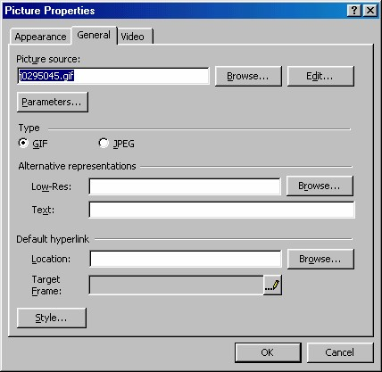
Gambar 7.9 Kotak dialog Picture Properties
2.1 Penentuan program editor gambar
Anda tidak bisa mengedit gambar dengan FrontPage XP, namun Anda bisa
memanggil program pengedit gambar dari FrontPage XP. Itupun harus ditentukan
lebih dulu seperti akan dijelaskan pada langkah-langkah di bawah.
Kalau Anda menginstal bonus pack FrontPage, Anda akan mendapatkan program
pengedit gambar bernama Image Composer. Dan secara otomatis ditunjuk sebagai
progam pengedit gambar untuk FrontPage XP Anda.
Baiklah, misalnya Anda perlu mengatur penentuan program pengedit gambar.
Berikut ini langkah-langkahnya:
1. Aktifkan Tools _ Options . Kotak dialog Options tampil.
2. Klik tab Configure Editors .
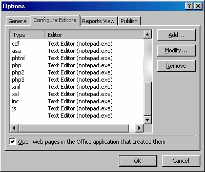
Gambar 7.10 Kotak dialog Options
3. Klik tombol Add, muncul kotak dialog Add Editor Association.
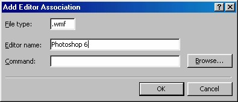
Gambar 7.11 Kotak dialog Add Editor Association
4. Pada kotak isian File type , isikan jenis ekstensi file gambar, misalnya jpg.
5. Lalu pada kotak isian Folder name, tuliskan program editor gambar yang
Anda miliki.
6. Pada kotak isian Command, tuliskan nama file eksekutor program tersebut
berikut path-nya. Untuk mencarinya, klik tombol Browse.
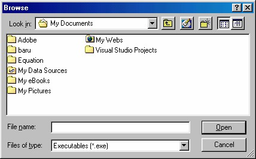
Gambar 7.12 Kotak dialog Browse untuk mencari file eksekutor Photoshop 6
7. Setelah mendapatkannya, klik OK. Kembali ke kotak dialog Picture.
8. Klik OK pada kotak dialog Picture .
9. Klik OK pada kotak dialog Options .
2.2 Modifikasi gambar
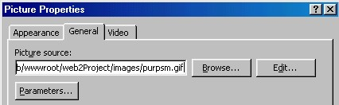
Gambar 7.13 Tab Genaral pilihan Picture Source
Di dalam kotak dialog Picture Properties, tab General, khususnya di kotak Picture
Source, Anda dapat melihat address untuk gambar tersebut. Lihat Gambar 7.13 di
atas. Jika Anda menyisipkan gambar dari Web atau Intranet, address-nya akan
menunjukkan address asli gambar tersebut. Jadi gambar tersebut belum disimpan di
dalam web Anda sendiri.
Jika Anda menggunakan beberapa Clipart dari Clip Organizer, atau file lainnya dari
hard disk Anda, address-nya juga merupakan address asli. File gambar itu akan
disimpan ke dalam web Anda, ketika Anda melakukan penyimpanan situs.
Tombol Browse bisa Anda gunakan untuk mengganti gambar. Sarananya adalah
kotak dialog Picture .
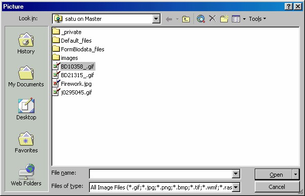
Gambar 7.14 Kotak dialog Picture untuk mencari gambar
Anda dapat mengedit gambar dengan klik tombol Edit. Tindakan ini akan membuka
program editor gambar yang telah Anda tentukan sebelumnya.
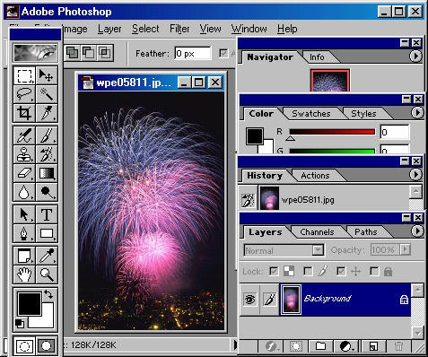
Gambar 7.15 Photoshop membuka gambar untuk diedit
Anda juga dapat mengaktifkan editor dengan klik ganda gambar tersebut.
Anda dapat meminta FrontPage untuk menyimpan file gambar tersebut ke format
tertentu, misalnya GIF atau JPEG, yaitu format gambar yang paling banyak
digunakan di web.
2.3 Format gambar
Format GIF berguna untuk melakukan interlace file atau untuk membuatnya
transparan, sementara format JPEG tidak dapat melakukan hal itu. Namun format ini
dapat menyimpan gambar dengan jumlah warna lebih banyak (256 warna atau lebih)
dan berguna untuk menentukan seberapa banyak bagian file yang dikompres.
File dengan format JPEG (singkatan dari Joint Photographic Expert Group) disimpan
dengan ekstensi JPG. Berikut ini keterangan lebih lanjut tentang kedua format:
• GIF (Garphics Interchange Format). Secara otomatis FrontPage akan
memilih jenis gambar ini jika gambar yang telah Anda sisipkan adalah
dalam format GIF, atau jika gambar tersebut memiliki warna kurang dari
256 warna.
• JPEG (Joint Photographic Expert Group). FrontPage secara otomatis akan
memilih jenis gambar ini jika gambar Anda memiliki format JPEG atau jika
gambar tersebut memiliki lebih dari 256 warna.
Jika Anda memodifikasi format file, Anda akan memaksa terjadinya sebuah
penyimpanan. Kalau gambar tersebut berasal dari web, yang artinya bukan gambar
Anda sendiri, maka tindakan ini akan menyebabkan FrontPage menyimpan gambar
tersebut. Anda akan diminta konfirmasinya lebih dulu.
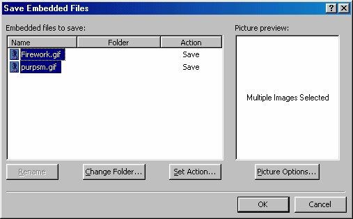
Gambar 7.16 Konfirmasi penyimpanan gambar dari luar
Khusus untuk gambar animasi GIF, pengaturan jenis filenya tidak dapat diedit.
2.4 Alternatif penampilan
Bidang Alternative Representations berguna untuk memberitahu browser tentang
pengganti gambar jika gambar tidak bisa muncul karena kedaan buruk.
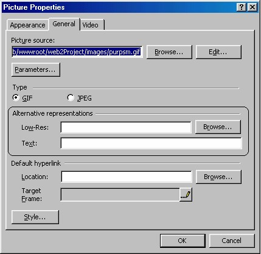
Gambar 7.17 Bidang Alternative Representations
Ada dua alternatif yang bisa digunakan untuk menggantikan tidak munculnya
gambar utama, yaitu “gambar ringan” (Low res) atau teks.
Berikut ini penjelasannya:
2.4.1 Low Res
Beberapa jenis browser tidak dapat menampilkan gambar seperti aslinya yang
“berat” (berukuran besar atau resolusi warnanya tinggi). Nah, untuk melayani jenis
browser ini, siapkan gambar versi kedua bagi gambar utama Anda. Versi kedua ini
tentu saja harus gambar “ringan”. Klik tombol Browse untuk menentukan gambar
alternatif ini. Kotak dialog Select Alternatif Picture akan tampil.
Gambar 7.18 Kotak dialog Select Alternatif Picture
Selain mencari versi kedua, Anda juga bisa membuat sendiri versi kedua dengan klik
tombol Edit. Editor gambar akan muncul. Setelah mengedit, simpanlah gambar versi
kedua tersebut dengan FrontPage XP di dalam web Anda.
2.4.2 Text (Text Alt)
Text Alt adalah teks yang akan ditampilkan di tempat gambar tersebut jika browser
pemakai tidak dapat menampilkan gambar (penyebabnya mungkin browser tersebut
jenis nongraphic, atau jika pemakai telah mematikan fungsi penampilan gambar).
Teks Alt akan ditampilkan pada sebuah kotak di lokasi gambar.
Khusus untuk browser Internet Explorer, teks Alt akan ditampilkan sebagai hint.
Yaitu teks yang muncul ketika pointer mouse berada di atas gambar selama beberapa
saat.
2.5 Default hyperlink
Anda dapat menjadikan sebuah gambar sebagai sebuah lin k. Caranya sangat mudah,
dengan memasukkan address halaman yang ingin Anda hubungkan ke dalam kotak
isian Location pada kelompok Default Hyperlink.
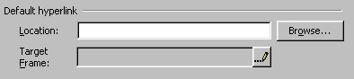
Gambar 7.19 Pengaturan Default Hyperlink
Kalau Anda tidak yakin dengan address halaman tujuan, klik saja tombol Browse
untuk mencari halaman tersebut dengan kotak dialog Edit Hyperlink.
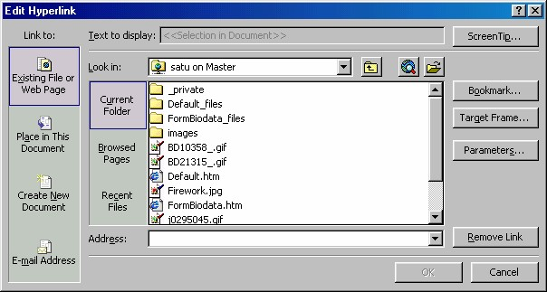
Gambar 7.20 Kotak dialog Edit Hyperlink
Mengapa disebut default hyperlink? Jawabannya agak panjang. Kalau pada halaman
terdapat banyak gambar yang masing-masing memiliki link tersendiri, bahkan ada
gambar yang memiliki link lebih dari satu (disebut hotspot). Maka default hyperlink
adalah link gambar yang hanya memiliki satu link saja (bukan hotspot).
2.6 Pelipatan teks, layout dan ukuran gambar
Klik tab Appearance untuk melihat informasi seperti Gambar 7.6. Pada tampilan ini
Anda dapat mengatur tiga jenis pengaturan, antara lain: Pelipatan teks (Wrapping
style ), tata letak (Layout) dan ukuran gambar (Size ).
2.6.1 Pelipatan teks
Ada tiga jenis pelipatan gambar di dala m teks, yaitu Left, Right dan None.
Seperti tampak pada gambar iconnya, None berarti tanpa pelipatan. Left berarti
pelipatan dengan gambar di sebelah kiri, sebalikya Right berarti pelipatan dengan
gambar di sebelah kanan.
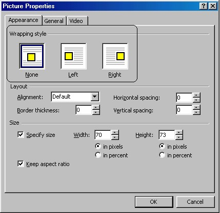
Gambar 7.21 Tab Appearance, pilihan wrapping style
2.6.2 Layout
Klik kotak daftar Alignment, dan siap-siap untuk sebuah kejutan. Apa itu? Pilihanpilihan
ini untuk menentukan bagaimana gambar tersebut dijajarkan dengan item
lainnya, pada baris yang sama
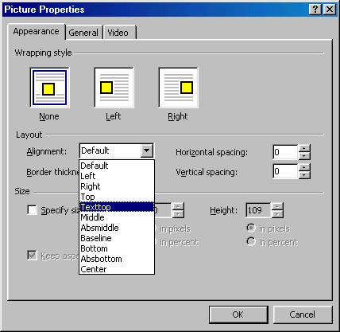
Gambar 7.22 Pilihan Alignment
Berikut ini arti dari pilihan-pilihan tersebut:
o None. FrontPage XP tidak akan menerapkan pelipatan teks pada gambar.
o Left. Gambar tersebut digeser hingga ke margin kiri, dengan teks di sebelah
kanannya. Teks itu kemudian akan dipenggal di sis i kanan dari gambar.
o Right. Gambar akan dipindahkan ke kanan hingga margin kanan, dengan teks
di sebelah kiri gambar tersebut. Teks itu akan dipenggal di sisi kiri gambar.
Ketiga pilihan di atas (None, Left dan Right) fungsinya sama dengan ketiga
icon pada kelompok Wrapping Style sebelum ini. Icon tersebut juga bernama
None, Left dan Right.
o Bottom. Gambar dijajarkan dengan baris bawah (Bukan bagian bawah teks
tetapi bagian bawah dari baselinenya, yaitu baris tempat karakter bertumpu).
o Middle . Gambar dijajarkan dengan bagian tengah baseline teks.
o Top. Gambar dijajarkan dengan bagian atas item tertinggi dari barisan, yang
dapat berupa teks atau gambar.
o Absbottom.Bagian bawah gambar akan dijajarkan dengan bagian bawah
absolut teks. Misalnya, jika sebuah baris memiliki karakter subscript yang
mencapai bagian bawah baris, maka gambar itu akan dijajarkan dengan bagian
bawah dari karakter tersebut.
o Absmiddle. Gambar akan dijajarkan dengan bagian tengah baris, sehingga
dapat digunakan oleh karakter dengan ukuran la in atau gambargambar lain pada
baris itu.
o Texttop. Gambar akan dijajarkan dengan bagian atas teks yang paling tinggi
pada baris itu. (Pada Internet Explorer pilihan texttop berfungsi sama dengan
pilihan top).
o Baseline . Ini adalah pilihan yang sama dengan pilihan bottom. (Mengapa
mempunyai dua pilihan yang fungsinya sama? Semua ini adalah nama-nama
dari atribut HTML yang digunakan untuk menjajarkan gambar, dan HTML
memang memiliki dua fungsi yang sama).
Cobalah bereksperimen dengan pilihan-pilihan tersebut dan perhatikan hasilnya,
kebanyakan tidak menyebabkan teks akan mengelilingi gambar. Hanya Left dan
Right yang dapat melakukannya.
Dalam kasus lainnya pilihan tersebut menyebabkan sebuah baris akan ditempatkan
di sepanjang gambar itu, dengan baris-baris berikutnya pada paragraf yang sama
dimulai di bawah gambar itu. Sebagai kompensasi pengaturan Alignment ini, Anda
dapat menggunakan perintah Insert _Break untuk menyesuaikan pengaturan aliran
teks di sekitar gambar.
telah kita lakukan adalah menjajarkan objek gambar dengan teks secara baris.
Sedangkan menjajarkan objek secara kolom agak sulit. Cara yang terbaik untuk
melakukannya adalah dengan tabel.
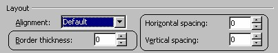
Gambar 7.23 Pengaturan Border
Anda dapat menempatkan border di sekeliling gambar dan juga menentukan ukuran
spasi yang harus disisakan di sekeliling gambar tersebut, yaitu di antara gambar dan
teks.
o Border Thickness, masukkan jumlah pixel yang akan digunakan untuk border.
Ingat bahwa ukuran dari garis itu akan bergantung pada resolusi video dan
ukuran monitor yang digunakan pemakai.
o Horizontal Spacing, adalah jarak dari atas atau bawah gambar ke teks, dalam
pixels.
o Vertical Spacing, adalah jarak antara sisi kiri atau kanan dari gambar ke teksjuga
dalam pixels.
Namun sayangnya fasilitas pengaturan border ini tidak dapat ditanggapi secara utuh
oleh semua jenis browser. Ada yang menampilkan terlalu tebal atau terlalu tipis,
bahkan ada yang tidak menampilkannya sama sekali.
2.6.3 Mengatur ukuran sebuah gambar
Pada saat Anda menyisipkan sebuah gambar, FrontPage secara otomatis
memasukkan ukurannya ke dalam tag HTML. Padahal HTML tidak membutuhkan
penentuan ukuran sebuah gambar.
Jika Anda menentukan ukuran sebuah gambar, sebelum browser memanggil gambar
itu maka sebuah ruang akan disediakan dan pemakai akan melihat sebuah kotak
dengan teks alternatif gambar tersebut.
Sebaiknya tentukan ukuran gambar, jika tidak, kelak pada saat gambar dipanggil,
teks pada halaman akan berpindah-pindah posisi karena harus memberi tempat bagi
gambar tersebut.
Yang perlu Anda atur adalah mengklik kotak cek Specify Size lalu tuliskan angka
yang ingin Anda gunakan. Anda dapat menggunakan ukuran pixel atau persentase
halaman.
Ada cara yang lebih mudah untuk mengubah ukuran sebuah gambar. Klik sebuah
gambar dan Anda akan melihat kotak-kotak hitam kecil di setiap sudut dan sisi
gambar, disebut handle . Tempatkan pointer mouse pada salah satu dari handle itu
dan pointer akan berubah menjadi sebuah panah bermata dua. Drag handle ini ke
arah dalam atau ke arah luar untuk memperkecil atau memperbesar gambar tersebut.
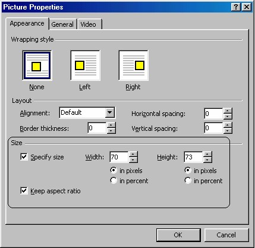
Gambar 7.24 Pengaturan ukuran gambar
Copyright © Herlan Lesmana
Created with the Freeware Edition of HelpNDoc: Easily create Help documents